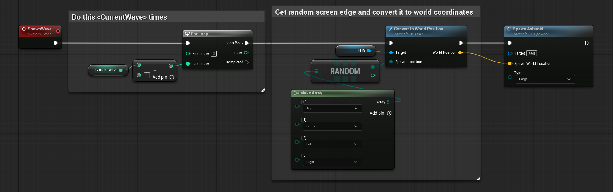
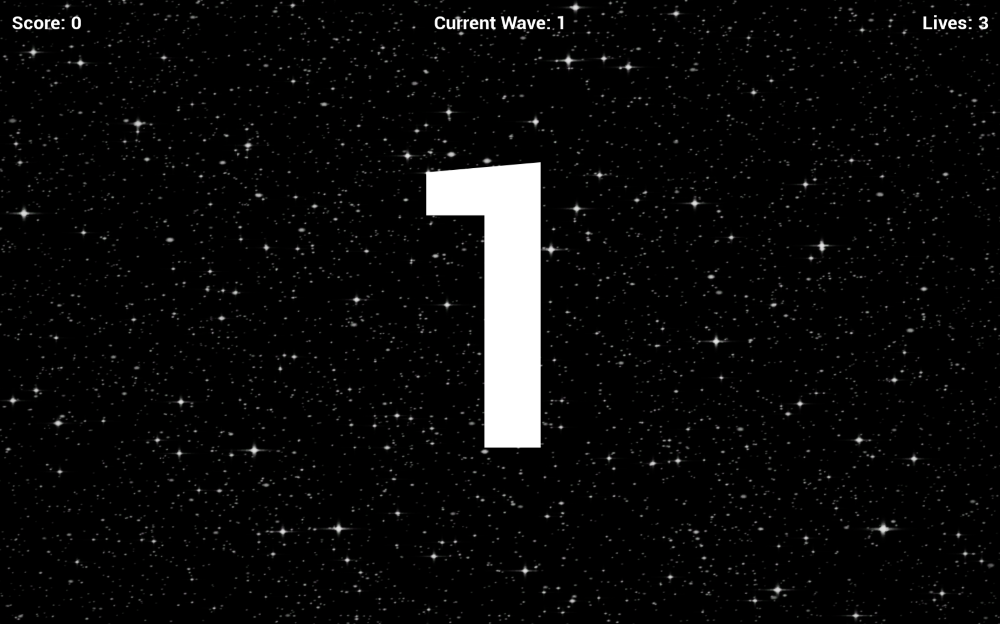
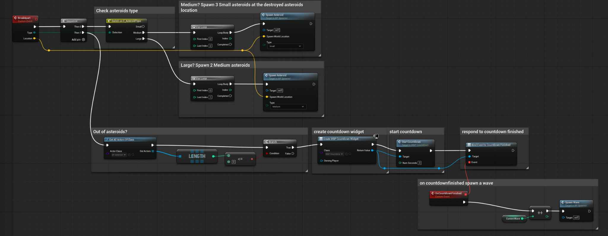
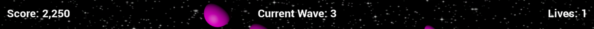
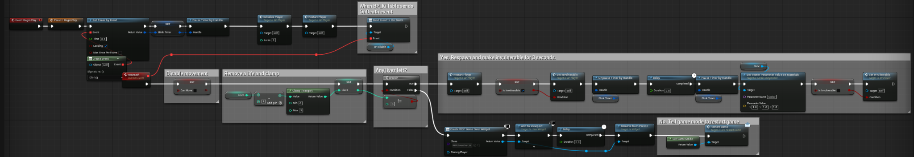
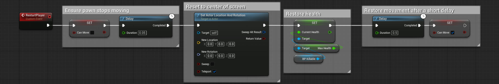
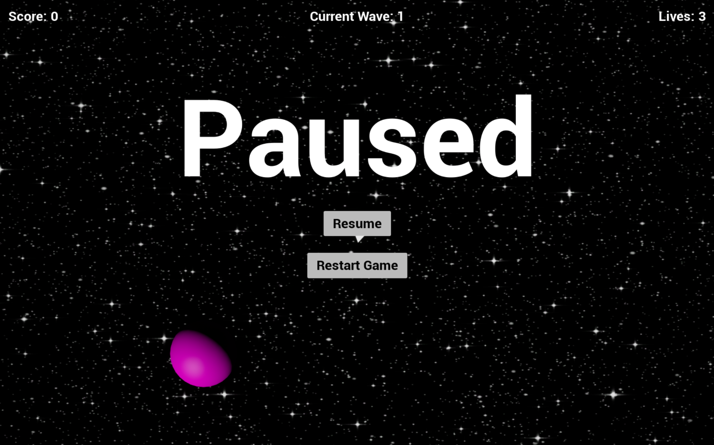

PROJECT OVERVIEW
This project uses a course-provided Asteroids-style framework as its foundation. My work focused on implementing and connecting the gameplay logic needed to turn that foundation into a complete arcade loop.
The finished prototype tracks score, lives, and wave progression; spawns asteroids from randomized screen edges; breaks larger asteroids into smaller targets; transitions between waves with a countdown; handles player death and respawning; and supports pause, restart, and game-over states.
Role: Gameplay / Technical Designer • Focus: Blueprint gameplay logic, spawning, progression, player lifecycle, UI, testing, and debugging.

SYSTEM 01
WAVE SPAWNING & PROGRESSION
The wave system controls how many large asteroids enter play and where they appear. The current wave value determines the number of initial asteroids spawned, allowing the challenge to increase as the player progresses.
Randomized Screen-Edge Spawning
For each asteroid in a wave, the spawner selects a random screen edge from Top, Bottom, Left, or Right. That screen-space location is converted to a world position before a large asteroid is spawned, keeping new targets around the perimeter rather than appearing directly on the player.
Wave Transition
When the asteroid population reaches zero, the system creates a countdown widget and listens for the countdown-finished event. Once the countdown completes, the current wave is incremented and the next wave is spawned.
Result
The player moves through a repeating arcade loop of clearing a wave, receiving a short transition period, and facing a larger incoming wave.


SYSTEM 02
ASTEROID SPLITTING & SCORING
Asteroids are categorized as Large, Medium, or Small. Their type determines what happens when they are destroyed and allows one target to become a sequence of smaller threats.
Break-Apart Logic
The spawner checks the destroyed asteroid's type and uses its destruction location for the replacement targets. A Large asteroid produces two Medium asteroids, while a Medium asteroid produces three Small asteroids. Small asteroids end the split chain.
Scoring
The asteroid Blueprint assigns values based on asteroid type and communicates destruction information back to the gameplay systems so the score can be updated while the spawner handles the next stage of the asteroid.
Result
Destroying a large target changes the encounter instead of simply removing an enemy, creating a layered risk/reward loop and keeping the active target count dynamic.


SYSTEM 03
PLAYER LIFE & RESPAWN SYSTEM
Player death is handled as a gameplay state rather than an immediate full restart. The system removes a life, checks whether any lives remain, and either respawns the player or moves into the game-over flow.
Respawn Flow
When lives remain, the player is reset to the center of the screen, health is restored, and movement is temporarily disabled. After respawning, the player receives a short period of invulnerability before normal play resumes.
Game Over
If the player has no remaining lives, the system creates the Game Over UI and routes the restart through the game mode rather than continuing the normal respawn path.
Result
The player gets a clear arcade-style life cycle: death, life reduction, protected respawn, return to play, and eventually game over when the life pool is exhausted.


SYSTEM 04
GAME STATE & UI
The prototype includes the supporting states needed to make the gameplay loop usable from start to finish: an initial start state, HUD feedback, wave countdowns, pause/resume controls, restart behavior, and game over.
The HUD continuously communicates the three values most important to the arcade loop—score, current wave, and lives—while the pause menu gives the player explicit Resume and Restart Game options.

DEVELOPMENT & DEBUGGING
This project required multiple Blueprints to communicate across the full gameplay loop. The spawner needed to know when asteroids were destroyed, the asteroid logic needed to communicate type and destruction information, the player system needed to manage death and respawning, and the UI needed to reflect changing gameplay state.
Breaking the logic into focused Blueprint sections and using comments helped me test individual behaviors while still understanding how they connected to the complete game loop.
WHAT I LEARNED
This project helped me move from thinking about mechanics individually to thinking about how gameplay systems depend on one another. Spawning, destruction, scoring, waves, lives, respawning, countdowns, and UI all had to stay synchronized for the prototype to feel complete.
It also gave me more experience extending an existing Unreal project rather than treating every feature as an isolated Blueprint. That experience carried into later projects where I built more reusable and modular systems.
CONTRIBUTION BREAKDOWN
Course-Provided Foundation
Starter Asteroids-style project structure and underlying framework/assets used as the base for the assignment.
My Implementation
Gameplay logic connecting wave spawning and progression, randomized screen-edge spawning, asteroid splitting behavior, score/life progression, player death and respawn flow, countdown transitions, pause/restart behavior, and supporting UI/game-state functionality shown in this case study.